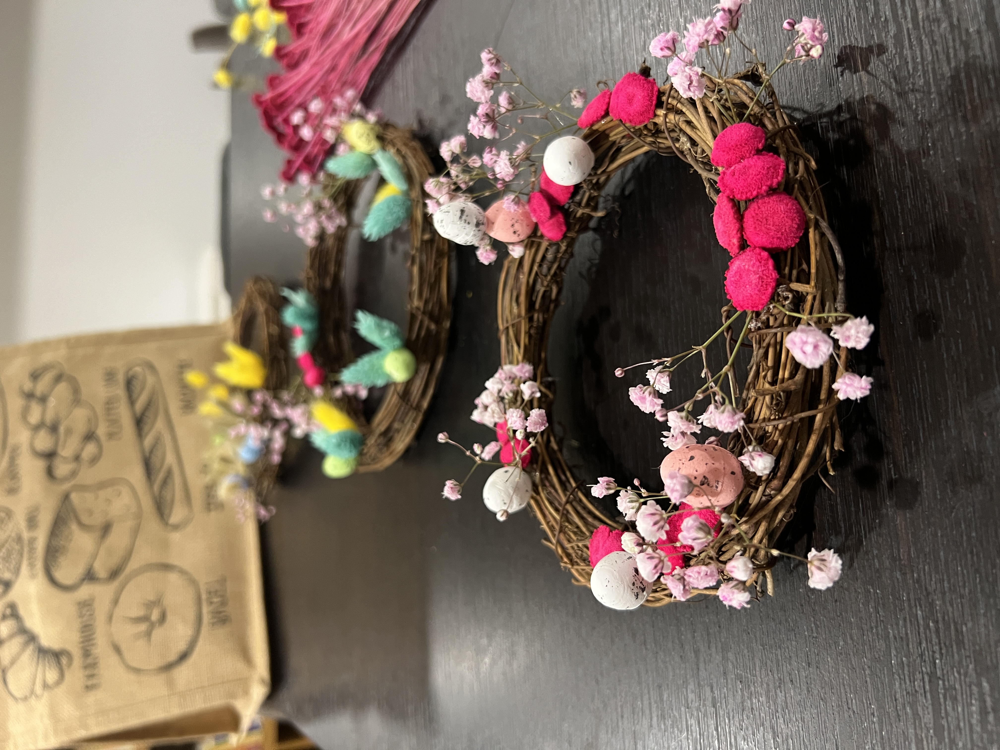

Kamarka Store- Sustainable home decor beauty

Hey! We noticed that you are visiting our website. Thanks for supporting our small business. We believe in natural beauty, but also in sustainablity. We make dry floral arrangements that will spice up your aesthetic and are long-lasting. You can dive in and see some of our bouquets below.



Easter wreath collection
So why dry flowers? Well, let us elaborate.
Firslty, easy care! Dry floral arrangements do not require any watering, not constant stem cutting.
Secondly, it's long-lasting and you would not be faced with a wilting situation after 5 days.
Thirdly, they bring an unique and earthy vibe that enriches your decor and gets you closer to nature for longer.
Where can you find us?
We do not have a physical store as of yet. Watch this space for relevant info on pop-ups and makers' markets, which we frequent quite often
You can find us online 24/7!We are on Etsy, where you can order directly; and on Instagram and TikTok, where you can DMs for orders. Links below and let's get chatting!
Our Etsy Page Our Insta Our TikTok
Our TikTok